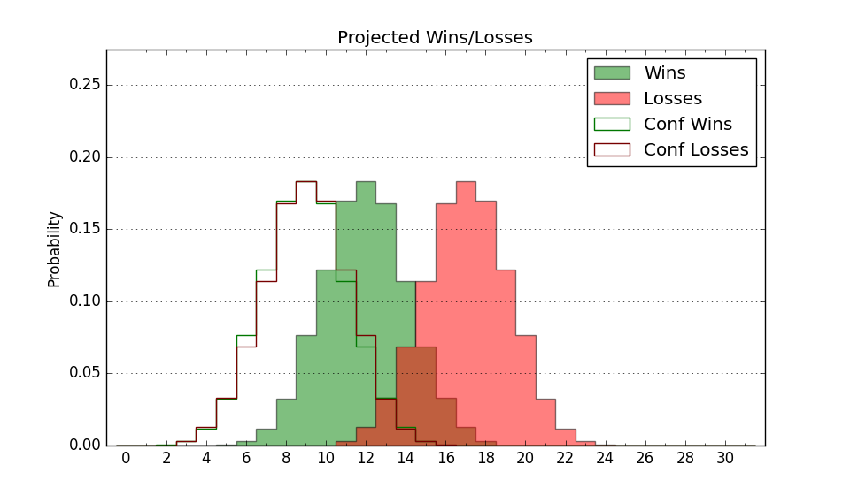

| Home | Game Probabilities | Conferences | Preseason Predictions | Odds Charts | NCAA Tournament |
| City: | Clarksville, Tennessee | |
| Conference: | Atlantic Sun (1st)
| |
| Record: | 1-0 (Conf) 4-8 (Overall) | |
| Ratings: | Comp.: -10.2 (277th) Net: -10.0 (276th) Off: 94.9 (331st) Def: 105.0 (166th) SoR: 0.0 (187th) |
| Remaining | ||||||
|---|---|---|---|---|---|---|
| Date | Opponent | Win Prob | Pred. | |||
| 1/4 | @ Jacksonville (199) | 22.9% | L 62-70 | |||
| 1/9 | West Georgia (331) | 77.0% | W 70-62 | |||
| 1/11 | Queens (255) | 60.9% | W 70-67 | |||
| 1/16 | Eastern Kentucky (170) | 43.5% | L 70-71 | |||
| 1/18 | @ Lipscomb (101) | 8.8% | L 58-73 | |||
| 1/23 | @ Central Arkansas (341) | 52.7% | W 67-66 | |||
| 1/25 | @ North Alabama (172) | 19.0% | L 64-73 | |||
| 1/30 | Bellarmine (350) | 83.2% | W 75-65 | |||
| 2/1 | @ Eastern Kentucky (170) | 18.4% | L 66-76 | |||
| 2/5 | North Alabama (172) | 44.4% | L 68-69 | |||
| 2/8 | Central Arkansas (341) | 79.2% | W 71-62 | |||
| 2/13 | Florida Gulf Coast (137) | 35.7% | L 63-67 | |||
| 2/15 | Stetson (351) | 83.3% | W 74-63 | |||
| 2/18 | @ Bellarmine (350) | 59.3% | W 71-69 | |||
| 2/20 | @ Queens (255) | 31.3% | L 66-71 | |||
| 2/24 | Lipscomb (101) | 24.7% | L 62-69 | |||
| 2/26 | @ West Georgia (331) | 49.5% | L 65-66 | |||
| Previous | Game Score | |||||
| Date | Opponent | Win Prob | Result | Off | Def | Net |
| 11/8 | @Butler (63) | 4.9% | W 68-66 | 15.8 | 16.0 | 31.8 |
| 11/11 | Chattanooga (210) | 51.8% | W 67-61 | 1.0 | 14.4 | 15.5 |
| 11/17 | @Tennessee (2) | 0.4% | L 68-103 | 14.4 | -17.1 | -2.7 |
| 11/20 | @Morehead St. (303) | 42.0% | L 58-63 | -7.9 | 1.2 | -6.7 |
| 11/26 | (N) Georgia St. (296) | 55.0% | W 62-50 | -4.2 | 19.5 | 15.3 |
| 11/27 | (N) UT Arlington (156) | 26.6% | L 58-68 | -11.3 | 3.3 | -8.0 |
| 11/30 | @East Tennessee St. (135) | 14.0% | L 57-79 | -9.9 | -6.1 | -16.0 |
| 12/8 | @Samford (125) | 12.4% | L 47-72 | -25.5 | 6.5 | -19.0 |
| 12/14 | Southern Illinois (222) | 54.7% | L 60-65 | -4.9 | -2.0 | -6.8 |
| 12/18 | @Ohio (161) | 16.7% | L 58-78 | -10.5 | -2.0 | -12.5 |
| 12/21 | @Vanderbilt (50) | 3.3% | L 55-85 | -12.3 | 2.3 | -10.0 |
| 1/2 | @North Florida (211) | 24.0% | W 97-89 | 29.3 | -4.1 | 25.2 |
| Stats & Trends | |||||
|---|---|---|---|---|---|
| Current | Day | Week | Month | Season | |
| Composite | -10.2 | +2.3 | +2.1 | -3.3 | +0.7 |
| Comp Rank | 277 | +22 | +21 | -43 | +2 |
| Net Efficiency | -10.0 | +2.9 | +2.6 | -6.2 | -- |
| Net Rank | 276 | +25 | +25 | -79 | -- |
| Off Efficiency | 94.9 | +3.6 | +3.7 | -1.7 | -- |
| Off Rank | 331 | +19 | +19 | -38 | -- |
| Def Efficiency | 105.0 | -0.7 | -1.0 | -4.5 | -- |
| Def Rank | 166 | -9 | -17 | -48 | -- |
| SoS Rank | 57 | -1 | -2 | +21 | -- |
| Exp. Wins | 12.0 | +1.5 | +1.4 | -1.4 | +1.4 |
| Exp. Conf Wins | 9.0 | +1.5 | +1.4 | -0.4 | +0.5 |
| Conf Champ Prob | 1.2 | +0.7 | +0.7 | -4.4 | -3.7 |

| Advanced Stats | ||
|---|---|---|
| Stat | Value | Rank |
| Off Eff FG % | 0.442 | 343 |
| Off Ast Ratio | 0.117 | 329 |
| Off ORB% | 0.247 | 277 |
| Off TO Rate | 0.160 | 253 |
| Off FT Ratio | 0.373 | 84 |
| Def Eff FG % | 0.519 | 213 |
| Def Ast Ratio | 0.149 | 201 |
| Def ORB% | 0.293 | 208 |
| Def TO Rate | 0.168 | 83 |
| Def FT Ratio | 0.384 | 293 |